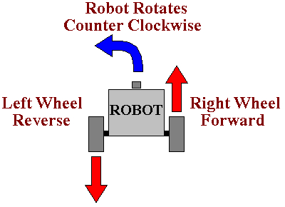
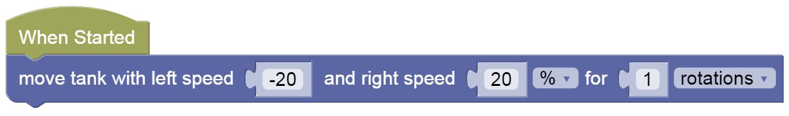
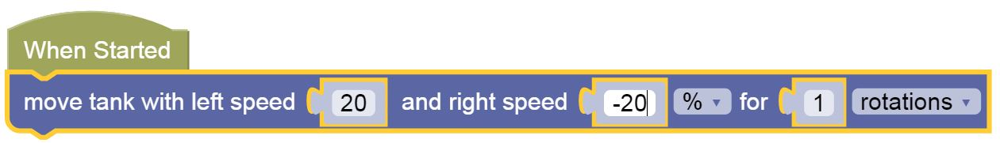

Sharp Turns
Being able to make turns is an important part of driving a particular path.
In this section we will be exploring how to make turns.
Left
To turn left, you reverse and rotate left tire back, and right tire forward.


It's Your Turn!
Load THIS LINK
Use the same Move Tank block to try and make a perfect Left turn.
You'll need to decide on which wheel to move fwd/back or keep off, and you will need to do some trial and error on the number of rotations.
Challenges:
- Turn Left 4 times, until your'e back to the same position
Right
To turn in either direction you will need to vary the direction and/or speeds of the two motors.
For instance to turn right, you can rotate the left tire forward and the right tire backward at the same speed:


- Turn Left, then turn Right back to the same position
Maze Challenge - Go to Yellow Area
-
Load this challenge map
-
Click on Simulator Tab to see Challenge
Pattern Recognition - See if you can reuse some of the blocks, by remembering which is Left, which is Right, and which is Forward and duplicating them when you need to use them.
Practice
You can try out the following mazes as well:
Test
-
Load this Test World
-
Follow instructions to complete the Test and take a screenshot when you get the Completion Code